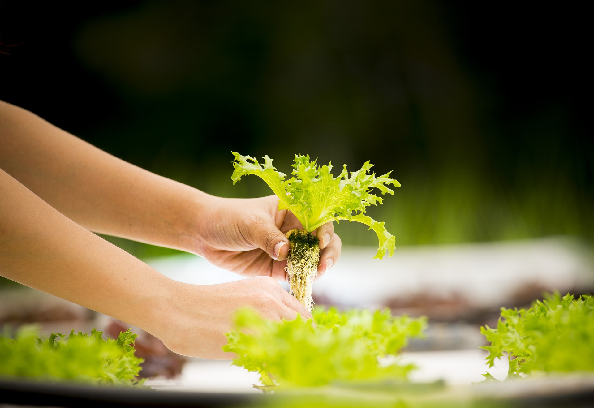

El futuro del cultivo sustentable
Rápida instalación, bajo peso, fácil mantenimiento.
Ante el problema de la falta de espacios verdes urbanos, la instalación de jardines verticales hidropónicos aporta una solución inteligente y sustentable para ayudar a crear esos sitios tan necesarios para la salud de las personas. Con sus múltiples beneficios, estas obras de arquitectura verde se multiplican en los muros de las ciudades para brindar belleza, vitalidad y bienestar a sus habitantes. Básicamente existen dos tipos de estructura para la instalación de jardines verticales que se pueden implementar: -Sistemas modulares de paneles o contenedores de sustrato -Sistema hidropónico De ellos, el sistema hidropónico se está utilizando cada vez más gracias a sus múltiples ventajas ¿Quieres saber cuáles son? ¡A continuación te contamos!
Ahorro de agua
El sistema de riego por goteo o flujo controlado hace que el uso del agua se encuentre limitado a lo estrictamente necesario y no se pierda por evaporación. Además, si hubiera excedente, este se puede hacer recircular haciendo al sistema mucho más eficiente. En un modelo con sustrato, la tierra absorbe gran cantidad de agua y el gasto es mucho mayor.
Mejor graduación y distribución de fertilizantes
Los nutrientes para las plantas se aplican vía el sistema de riego y en la cantidad justa para cada especie. El gasto económico en fertilizantes es más reducido respecto al sistema con sustrato, ya que los nutrientes no se pierden, algo que si ocurre cuando el sustrato se “lava”.
Crecimiento optimo de las plantas
Al no haber exceso de agua, se reduce el stress por evapotranspiración y las especies logran un desarrollo rápido, armónico y saludable. Además, sin sustrato, la planta economiza en raíces, enfocando su energía en producir más y mejores hojas y flores.
Limpieza
Al contrario de los jardines verticales con sustrato que constantemente pierden los materiales de sustento, la hidroponía es limpia y casi no genera residuos de este tipo.
Estructuras Livianas
Los jardines verticales hidropónicos son mucho más livianos que los sistemas modulares con sustrato. Se construyen con materiales ligeros y su instalación agrega muy poco peso a la pared. Además, tienen la ventaja de que el material es impermeable, protegiendo al muro de la humedad.
Menos matenimiento y mas durabilidad
Los jardines verticales hidropónicos son más duraderos y requieren de mucho menos mantenimiento con respecto a los sistemas modulares con sustrato. Además, en estos últimos se va perdiendo la materia orgánica de sustento por acción de los factores climáticos y del riego, por lo que su vida útil es más corta.
Jardines Verticales
Sistema modular textil multicapa para cultivo hidropónico con una alta densidad de plantación por m2. Formada por perfiles de acero galvanizado, adaptada y calculada según proyecto. Cuenta con un sistema de riego y control adecuado al tamaño y las necesidades de cada jardín vertical. Controlado con alarmas automáticas que alertan de toda necesidad al instante. El sistema de muro verde hidropónico crea las condiciones más saludables para las raíces de la planta, gracias a la excelente transpiración de la capa exterior, que optimiza el equilibrio entre agua, aire y sustrato para cada planta. Trabajamos con sistema hidropónico F+P
La incorporación de la naturaleza a las ciudades y entornos cerrados trae consigo una gran cantidad de beneficios. Muchos de estos son fácilmente comprobables, otros sin embargo hay que vivirlos para comprenderlos.